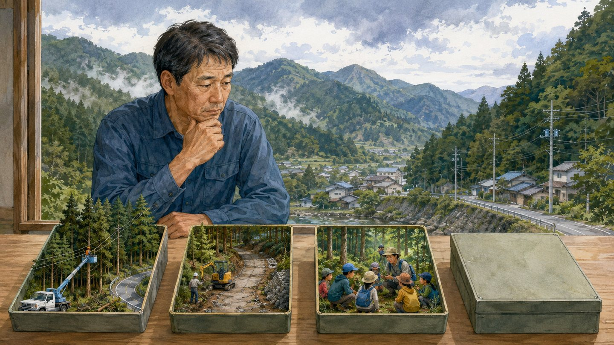
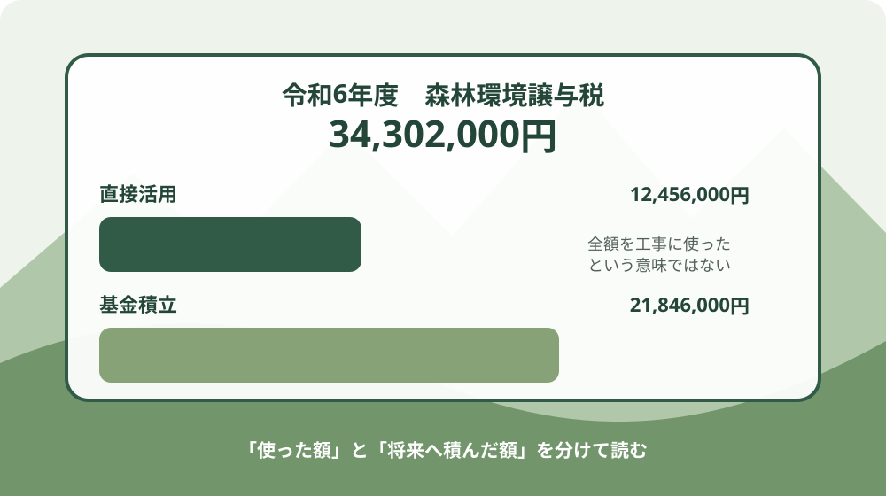
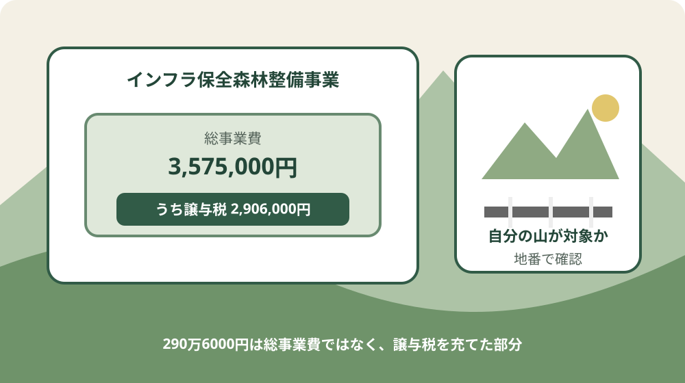

森町の森林環境譲与税｜3430万円の使い道

この記事の表紙は、内容をもとに生成したイメージです。実在する場所・人物・事業現場を撮影したものではありません。
この記事の要点
Q. 森町の森林環境譲与税3430万円は、何に使われましたか。
A. 令和6年度の譲与額は正確には34,302,000円です。直接活用12,456,000円、基金積立21,846,000円。インフラ保全森林整備には総事業費3,575,000円のうち2,906,000円を充当しました。自分の山が対象とは限らないため、地番を添えて林政係へ確認します。
森町に山林を持っていても、森林環境譲与税の金額を見ただけでは、自分の土地に何が起きるのか分かりません。
町へ3430万円ほど入ったと聞けば、間伐や危険木の処理がすぐ各地で進むようにも見えます。
しかし、森町公式の令和6年度資料を読むと、34,302,000円の全額が同じ年度に森林へ直接入ったわけではありません。
直接活用は12,456,000円で、21,846,000円は森町森林環境整備促進基金へ積み立てられました。
インフラ保全森林整備事業も、金額の読み分けが要ります。事業費の総額は3,575,000円です。
そのうち森林環境譲与税を充てた額が2,906,000円です。290万6000円を事業費全体と書くと誤りになります。
この記事は、森町の山林を持つ人が、交付額、直接活用、基金、個別事業の充当額を分けて読めるようにするものです。
森町の3430万円は、令和6年度34,302,000円
森町への森林環境譲与税は、令和6年度に34,302,000円交付されました。
「3430万円」は万円単位に丸めた表現で、正確な金額は3430万2000円です。
森町公式ページによると、令和元年度は9,361,000円、令和2年度は19,892,000円、令和3年度は19,966,000円でした。
令和4年度は24,972,000円、令和5年度も24,972,000円、令和6年度は34,302,000円です。
令和元年度から令和5年度までの譲与額は99,163,000円です。令和6年度分を加えた累計は133,465,000円です。
年度ごとの数字と累計を混ぜると、使途の規模を読み違えます。
森町公式ページには令和7年度34,022,000円が見込みとして載っています。
この記事の3430万円は令和7年度見込みではなく、令和6年度の34,302,000円を指します。
制度の使途は、間伐、人材育成、担い手確保、木材利用の促進、普及啓発など、森林整備とその促進に関する費用です。
一般的な使途の範囲と、森町が令和6年度に実際に計上した費目は分けて見ます。
直接活用1245万6000円と基金2184万6000円を分ける
令和6年度の譲与額34,302,000円は、直接活用12,456,000円と基金積立21,846,000円に分かれます。
二つを合計すると34,302,000円です。
直接活用12,456,000円は、公益的機能向上森林整備、インフラ保全森林整備、林道補修改良、森林環境教育への譲与税充当額を合計した数字です。
基金積立21,846,000円は、今後増えると見込まれる森林整備や、公共施設等の改修における木材利用などへ備えるための積立です。
令和6年度中に個別の山林で行われた工事費と同じではありません。
ここが意外な事実です。令和6年度の交付額34,302,000円のうち、約63.7％に当たる21,846,000円が基金積立でした。
約63.7％は二つの金額から算出した概算です。
基金へ積むこと自体を、使われていないと決め付けることはできません。年度をまたぐ整備や、大きな事業への備えには積立が要ります。
一方、所有者から見れば、いつ、どの地区、どの森林へ動くお金なのかが見えにくくなります。
資料の「活用額」は、基金積立を除いた直接活用として整理されています。
令和元年度から令和5年度までの活用額54,848,400円に、令和6年度12,456,000円を足した累計は67,304,400円です。
同じ期間の譲与額累計133,465,000円に対し、資料表示の活用率は50％です。
百分率だけで良否を決めず、直接事業と基金に分けて、次に何へ使う予定かを読みます。

令和6年度の五つの費目を読む
森町の令和6年度資料には、四つの直接事業と基金積立が載っています。
事業費総額と森林環境譲与税の充当額は一致しない項目があるため、二列を分けて確認します。
公益的機能向上森林整備事業は、総事業費6,600,000円で、同額の6,600,000円が森林環境譲与税です。
令和元年度と令和2年度の意向調査・現地調査で抽出した、森地区の一部の森林について間伐等を実施しました。
インフラ保全森林整備事業は、総事業費3,575,000円です。そのうち2,906,000円が森林環境譲与税から充てられました。
差額まで譲与税で賄ったと書かないようにします。
林道の補修改良は、総事業費17,920,628円で、森林環境譲与税の充当額は874,000円です。
資料は、森林整備の基盤を整えるため林道を補修したと説明しています。
森林環境教育は、総事業費2,076,305円で、譲与税充当額は2,076,000円です。
町内の小学5年生を対象に、旧三倉小学校の学校林で実施されました。
森町森林環境整備促進基金への積立は21,846,000円で、全額が森林環境譲与税です。
将来の森林整備や公共施設等の改修における木材利用などへ備えるとされています。
五項目の総事業費は52,017,933円です。うち森林環境譲与税は34,302,000円です。
総事業費が譲与額より大きいのは、林道補修改良やインフラ保全などに譲与税以外の財源も含まれるためです。
直接事業だけの譲与税充当額は、6,600,000円、2,906,000円、874,000円、2,076,000円です。
合計12,456,000円となり、資料の令和6年度活用額と一致します。
インフラ保全290万6000円は何を守る事業か
インフラ保全森林整備事業は、過去に台風等による停電や集落の孤立被害があった森林を対象としています。
森林の公益的機能を高め、住民の生活基盤にある重要なインフラ施設を保全するため、間伐等を実施した事業です。
この説明から読み取れるのは、木材生産だけを目的にした間伐ではないことです。
倒木等が電線や道路へ影響すれば、山の持ち主だけでなく、集落で暮らす人の移動や電力にも関わります。
一方、資料には対象となった森林の地番、所有者数、整備面積、施工時期は載っていません。
町内の山林すべてが対象とも、希望すれば個人所有林を町が整備するとも書かれていません。
290万6000円は、インフラ保全森林整備事業へ充てた譲与税額です。
総事業費は357万5000円なので、記事本文、図、見出しでは二つの金額を入れ替えません。
山林所有者にとって知りたいのは、事業名より自分の地番との接点です。
過去の停電、道路の通行止め、集落孤立、電線付近の立木などの情報がある場合は、地番と一緒に林政係へ伝える材料になります。

9月に読む理由と、資料から言えないこと
この記事の公開日は2026年9月3日です。
9月という時期は、山林の持ち主が家族の連絡先、道路、倒木の不安、過去の被害記録を見直すきっかけとして扱います。
令和6年度の活用資料には、「9月」「台風期」「9月に整備した」という記載はありません。
インフラ保全事業の説明にあるのは、過去に台風等で停電や集落孤立被害があった森林を対象としたことです。
したがって、290万6000円が2026年9月の台風へ備えるため新たに支出されたとは書けません。
令和6年度は2024年度に当たり、2026年9月の事業実施を示す資料ではありません。
9月に確認する内容は、支出月の説明ではなく、所有者側の備えです。
山林の地番、接する道路、電線との位置関係、現地を確認できる人、緊急時の連絡先を一枚にします。
大雨や強風の最中に山へ入ることは避けます。
この記事の「今日できる一歩」は現地作業ではありません。安全な場所で書類を開き、地番と問い合わせ先を控える作業です。
山林所有者にどう関わるのか
森林環境譲与税の交付額だけでは、特定の所有者の山林が整備対象かどうかは判断できません。
令和6年度資料で場所が具体的に示されるのは、公益的機能向上森林整備事業の「森地区の一部」という範囲までです。
相続した山林の場所自体が分からない場合は、事業への該当確認より先に所有情報を整理します。
取得後の届出と確認順序は、山林を相続したら、場所が分からなくても90日届出を確認するで説明しています。
現地の境界標を探しに入る前に、地籍調査の成果や公図など書類上の位置を確かめる方法があります。
畑と山の境界を確認する順番は、畑と山の境界は、現地に立つ前に地籍調査の成果で確かめられるにつなげています。
所有し続けるか、手放す方法を探すかが決まっていない家族もいます。
相続土地国庫帰属制度の条件は、山を国に引き取ってもらう道はあるかで整理しています。
森林環境譲与税が町へ交付されていることと、町が個人の管理責任を一律に引き受けることは別です。
資料には、個人所有林を申し込み順で整備する制度や、所有者へ現金を直接給付する仕組みは書かれていません。
良い点：間伐だけでなく林道・教育・備えへ分けた
令和6年度の使い道で良い点は、森林整備だけに一括せず、インフラ保全、林道補修、森林環境教育、将来の基金へ分けていることです。
森林を支える仕事は、木を切る工程だけでは終わりません。
公益的機能向上森林整備事業は、過去の意向調査と現地調査で対象を抽出しています。
調査をせず広く薄く配るのではなく、必要性を確認した森林の一部で間伐等を行った点は評価できます。
インフラ保全に譲与税を充てたことも、森町の地形と暮らしをつなぐ使い方です。
台風等による停電や集落孤立の経験を、道路や電線に関係する森林整備へつなげています。
林道補修への充当は874,000円と、総事業費17,920,628円の一部です。
譲与税だけで林道事業を抱えず、ほかの財源と組み合わせたことが数字から読み取れます。
旧三倉小学校の学校林で小学5年生を対象に森林環境教育を行った点も、将来の担い手を考える使い道です。
すぐに間伐面積へ表れなくても、山と暮らしの関係を次の世代へ渡す役割があります。
基金積立には、年度ごとの交付額だけでは対応しにくい事業へ備える意味があります。
今後増える森林整備や木材利用へ資金を残す判断には、単年度の執行額だけでは測れない利点があります。
注文したい点：地番から対象へたどれない
良い点を確認したうえで、注文したいことがあります。現在の一枚資料では、山林所有者が自分の地番から対象事業へたどることができません。
森地区の一部という記載はあっても、整備面積、筆数、所有者数、選定の考え方は掲載されていません。
インフラ保全事業も、どの道路や電線に関わる森林だったのかは資料だけでは分かりません。
基金21,846,000円についても、積み立てた理由は書かれていますが、取り崩しを判断する時期や次の候補事業は示されていません。
所有者側から見れば、備えの金額と将来の動きの間が空いています。
町職員や現場の担い手は、所有者調査、境界確認、施工調整、林道管理へすでに時間を払っています。
公開項目を増やすにも負担があるため、個人情報を出さず、地区、面積、事業期間、選定条件を年次でそろえる形が現実的です。
私は、支出額が大きいから悪い、基金が多いから遅いとは考えません。
分からないのは、基金を含む3430万2000円が、次にどの課題へつながるかです。
分からない部分は評価で埋めず、未確認として残します。
対案・結論：地番、被害履歴、連絡記録を一枚にする
山林所有者が作る確認表は、一枚で足ります。
山林の所在地と地番、登記名義、取得日、接する道路、電線や水路との位置関係、過去に聞いた倒木・停電・孤立被害を書きます。
所在地と地番が分からない場合は、固定資産税の資料、登記事項証明書、相続書類を先に確認します。
現地の木や境界標を見ただけで、自分の所有範囲を決めません。
問い合わせ先は森町役場の林政係、電話0538-85-6317です。
「森林環境譲与税で何かしてもらえますか」と広く聞くより、地番と知りたい一点を伝えます。
質問例は、「この地番は森林所有者への意向調査の対象になっていますか」です。
「令和6年度の整備対象との関係を確認できますか」「近接する道路や電線に関する相談先はどこですか」と続けられます。
2026年9月3日にできる小さな一歩は、山林の地番を一つ控えることです。
林政係の電話番号と並べて家族へ送れば、結論を出さずに次の確認ができる状態になります。
家族に残す記録
家族に残す記録には、山林の地番、名義、取得日、面積、境界資料の所在、現地へ入る道、鍵やゲートの有無、連絡できる近隣関係者を書きます。
未確認項目は推測せず「未確認」とします。
町への問い合わせは、日付、窓口、伝えた地番、質問、回答の要点、次に必要な書類を残します。
担当者個人の名前を家族外へ広げず、公式窓口を基準に記録します。
過去の被害は、家族の記憶と公的な記録を別欄にします。
「昔、道が塞がったらしい」という話を確定情報にせず、時期、場所、誰から聞いたかを添えます。
森林環境譲与税の記録には、令和6年度譲与額34,302,000円、直接活用12,456,000円、基金積立21,846,000円と書きます。
一つの3430万円に戻さないことが、後の比較に効きます。
大石の視点：3430万円を一つの数字で見ない
大石浩之（磐田市／不動産業）として、私はこう考えます。町の取り組みは、良かった部分を先に認めます。
間伐、インフラ、林道、教育、基金へ分けたことには、それぞれ理由があります。
3430万円と聞いて、全部山に入ったと思ったら違う。直接活用は1245万6000円、2184万6000円は基金だ。良い仕事は認める。でも、自分の山にどう関わるか分からなければ、持ち主は動けない。
基金を持つことと、情報を止めることは同じではありません。
将来へ備えて積み立てるなら、次にどの種類の事業を考えているか、所有者がどの情報を出せばよいかまで見えると相談しやすくなります。
私自身、直接活用が少ないと書くべきか、将来への備えが厚いと書くべきか迷います。
どちらか一方だけでは、令和6年度の数字を正確に伝えられません。
そこで、評価より先に12,456,000円と21,846,000円を分けました。
インフラ保全も総事業費3,575,000円と譲与税充当2,906,000円を分けます。
数字を分ければ、良い点と注文を同じ事実から話せます。
山林を持ち続けるか、整備するか、家族へ引き継ぐか、手放す道を探すかは、今日決めなくてよい。
ただし地番と窓口だけは残す。半年後にどの道を選んでも、その二つは無駄になりません。
まとめ：今日、地番を一つ控える
森町への森林環境譲与税は、令和6年度34,302,000円でした。
直接活用12,456,000円と基金積立21,846,000円に分かれます。3430万円の全額が同年度の森林工事費ではありません。
インフラ保全森林整備事業の総事業費は3,575,000円で、そのうち譲与税充当額は2,906,000円です。
対象は過去に台風等で停電や集落孤立被害があった森林ですが、個別地番は資料に載っていません。
2026年9月3日にできることは、山へ急ぐことではありません。
山林の地番を一つ控え、林政係へ対象確認の方法を聞く。町の3430万円を、自分の家族の確認へつなげる入口になります。
よくある質問
Q1. 森町の森林環境譲与税3430万円は、全額が森林整備に使われましたか。
A1. 令和6年度の譲与額は正確には34,302,000円です。直接活用は12,456,000円で、21,846,000円は森町森林環境整備促進基金へ積み立てられました。基金は今後の森林整備や公共施設等での木材利用などへ備えるもので、同年度の直接工事費とは分けて読みます。
Q2. インフラ保全森林整備の290万6000円は、事業費の総額ですか。
A2. 総額ではありません。令和6年度のインフラ保全森林整備事業費は3,575,000円で、そのうち森林環境譲与税から2,906,000円が充てられました。対象は過去に台風等で停電や集落孤立被害があった森林ですが、個別の地番や整備面積は公表資料に記載されていません。
Q3. 森林環境譲与税で、自分の山を整備してもらえますか。
A3. 公表資料だけでは判断できません。個人所有林を一律に整備する制度や、所有者へ直接給付する仕組みは記載されていません。山林の地番、名義、接する道路や電線、過去の倒木・停電等の情報をそろえ、森町役場の林政係（0538-85-6317）へ対象確認の方法を尋ねてください。
出典・確認先
- 森林環境譲与税について／静岡県森町（ページ更新日2025年10月1日。制度の使途、各年度の交付額、林政係を2026年9月3日に確認）
- 森町における森林環境譲与税の活用について／静岡県森町（令和6年度の直接活用、基金、総事業費、譲与税充当額、累計活用率を2026年9月3日に確認。PDF本文に公表日記載なし）
- 森林の土地の所有者届出制度について／静岡県森町（山林取得後の届出と林政係を2026年9月3日に確認）

磐田市で小さな不動産業を営みながら、森町の空き家・農地・実家じまいのご相談を受けています。良い点を先に認め、数字を所有者の確認順序へ移します。
最終確認日：2026-09-03 ／ 交付額、事業内容、基金の使途、窓口は更新されることがあります。特定の山林が対象になるかは公表資料だけで断定せず、担当窓口へ確認してください。